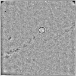

| .OPERATION: | FF | ; Filter - Fourier |
| .INPUT FILE: | ft_001 | ; Fourier image (input) |
| .OUTPUT FILE: | ff_001 | ; Fourier image (output) |
| .FILTER TYPE (1-10): | 2 | ; Filter type |
| .FILTER RADIUS (IN FREQUENCY OR PIXEL UNITS): | 10 | ; Radius (pixels) |
| INPUT (Original real image) | OUTPUT (Real image, not Fourier) |
|---|---|
|  |
| sav_pp | ff |